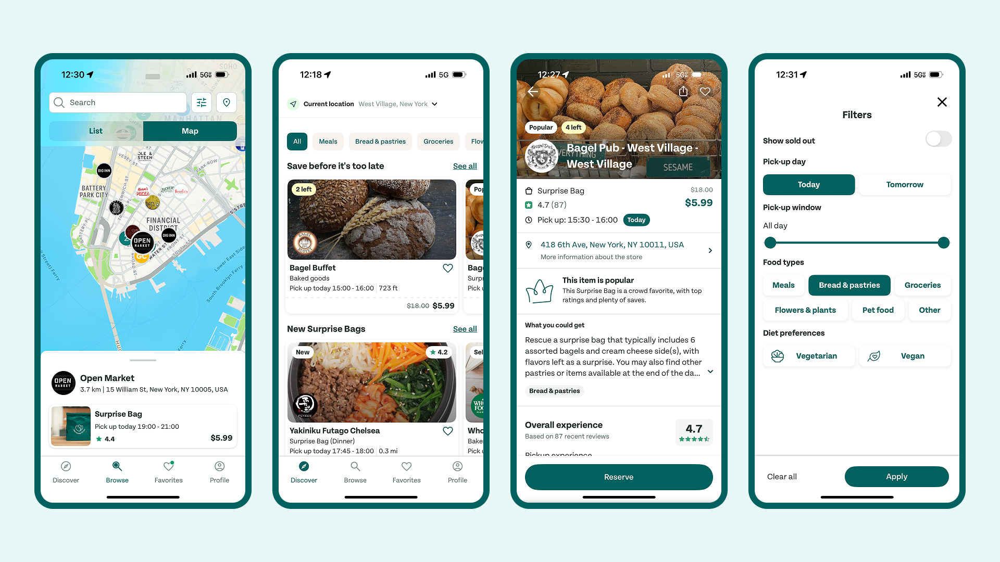
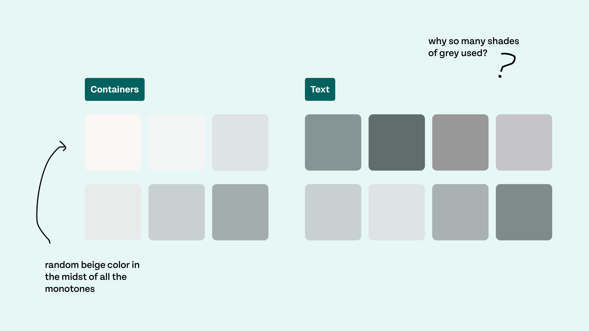
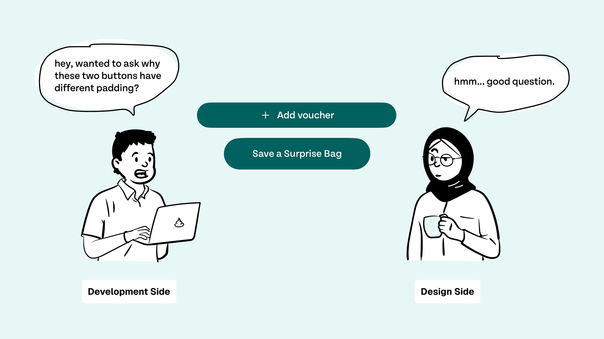
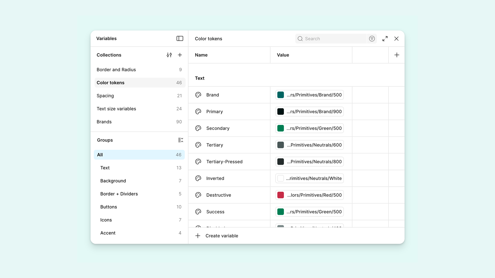
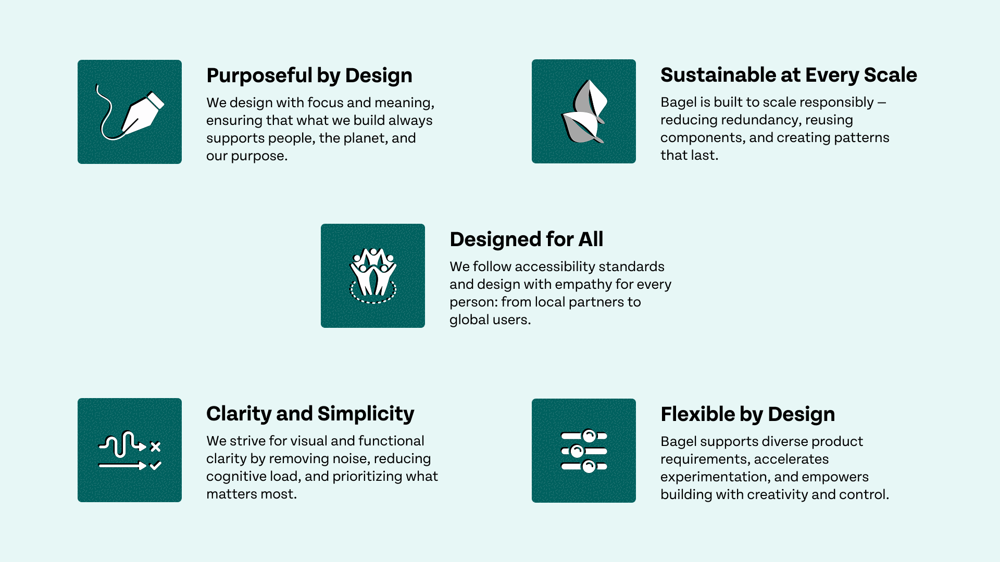
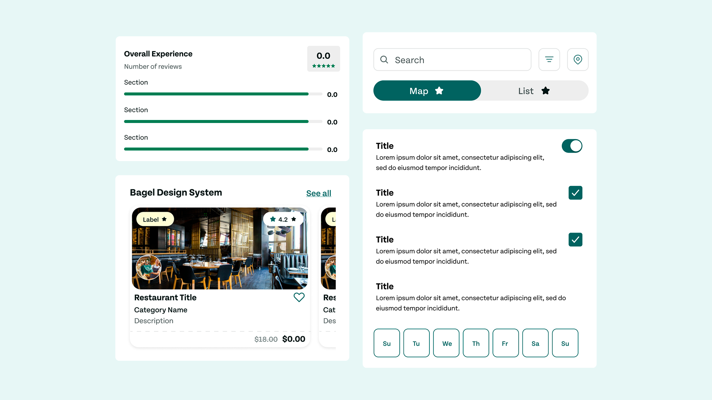
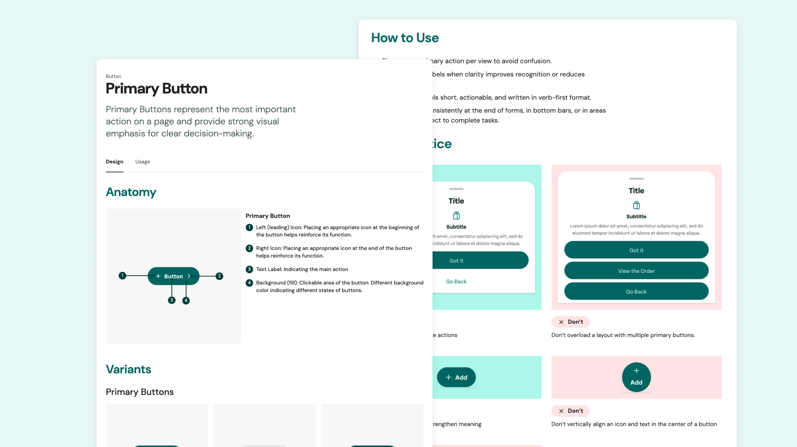

Bagel, a Unified Recipe for Too Good To Go
Too Good To Go rescues perfectly good food from being wasted, but their product ecosystem was starting to feel a little stale. That’s where Bagel comes in: a fresh, cohesive design system my team and I created to bring consistency, clarity, and flavor back to the interface. In this project, we baked a full set of tokens, components, and documentation to help the brand scale with confidence.
Too Good to Go is a global food-saving app with a growing product ecosystem.
Too Good To Go is a mission-driven company and mobile-first platform that helps people rescue surplus food from local restaurants, cafes, and grocery stores. Users can purchase discounted “surprise bags,” reducing waste while supporting their communities.
However, as the app expanded, its product ecosystem grew rapidly, and most importantly, not always cohesively.
1. Inconsistencies... everywhere!
Elements foundational to the core brand, such as colors, typography, and spacing, varied from screen to screen. This created an experience that didn’t always feel cohesive. Furthermore, buttons, cards, icons, and other essential UI elements existed in multiple versions. This meant designers often rebuilt components from scratch, resulting in inconsistent visuals and extra design time.
2. Inefficient workflows
Because styles and components weren’t standardized, we can only assume that handoffs were slower, and that designers and developers spent time fixing inconsistencies instead of building new features.
Without a unified system, the product became harder to scale, harder to maintain, and more difficult to keep cohesive across surfaces.
This led to the formation of our problem statement.
And, a centralized design system emerged as the clear solution.
Kneading the foundational ingredients of the design system.
The foundations of Bagel establish the shared building blocks that bring consistency and cohesion across Too Good To Go. We definined clear rules for color, typography, iconography, layout, and spacing, creating a reliable baseline that teams can build from with confidence.
Shaping the core values that hold Bagel together: a system that reflects Too Good To Go’s mission.
Between defining foundations and building components, we worked on establishing principles to guide every decision. This process was a no-brainer: we knew our principles had to be shaped to reflect both product needs and Too Good To Go’s broader mission.
From ingredients to interface, we next baked out the component library.
We next focused on translating those rules into reusable, flexible components. From avatars, input fields, navigation, to search bars, our components serve as building blocks of the product, enabling teams to assemble screens quickly while maintaining consistency.
Every aspect of Bagel was documented to provide the team with a shared source of truth.
With the foundations and components in place, documentation became the bridge between the system and the people using it. We centralized everything in Zeroheight, creating a shared source of truth for designers, developers, and stakeholders.
The importance of designing with scalability in mind!
One of my biggest takeaways from this project came from rethinking how I approached list items. At first, separate list item components were created for each use case across the interface. While this worked initially, I realized it wouldn’t scale as new content types were introduced.
In future projects, I hope to approach design with scalability in mind from the outset, thinking beyond immediate use cases to anticipate how design might evolve as products grow.